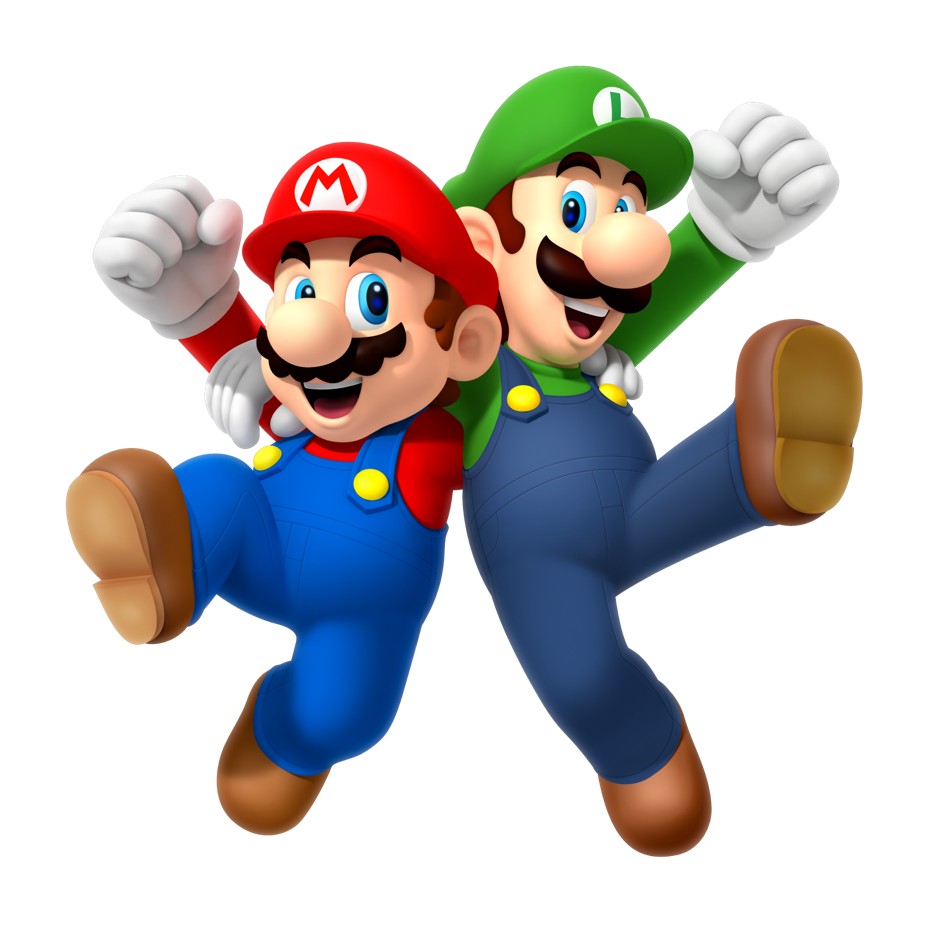
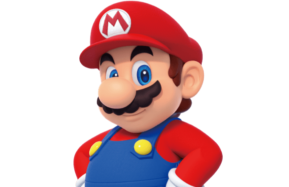
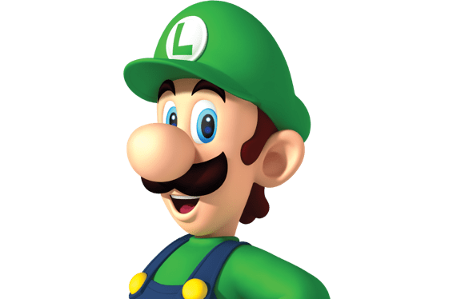
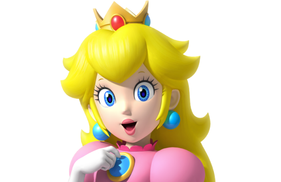

Characters
From ravishing royalty to menacing monsters, the Mushroom Kingdom has had its share of memorable characters over the years…
-
Mario
The main hero of the Mushroom Kingdom. Mario is always bright and cheerful and instantly recognizable with his blue overalls, red cap, and trademark moustache.
He's a trusted friend of Princess Peach, and he and his brother Luigi are known across the land for their acts of bravery.
Mario excels at sports including tennis, golf, baseball, soccer, and even kart racing. He's good at all of them! He's a plumber by profession but is really a jack of all trades.
He uses his masterful jumping ability and a variety of power-ups to take on his archrival, Bowser.- Sound 1
- Sound 2
- Sound 3
-

Luigi
Mario's brother and fellow hero of the Mushroom Kingdom. Luigi is instantly recognizable in his trademark green hat and green shirt.
Luigi is kind but can be a bit nervous, especially around ghosts. However, his abilities are on par with Mario's, so when these brothers team up, there's nothing they can't achieve.
Luigi is taller and can jump higher than Mario. If you look closely, you may also notice that the shape of his moustache is a bit different as well.- Sound 1
- Sound 2
- Sound 3
-

Princess Peach
The beloved princess of the Mushroom Kingdom. She's extremely kind and is always working to create a world where everyone can live together happily. Her signature pink dress is quite lovely.
Princess Peach is always game for a variety of sports, and also enjoys baking and cooking.
Princess Peach and Mario are good friends and help each other out whenever they can.- Sound 1
- Sound 2
- Sound 3
-

Toad
A resident of the Mushroom Kingdom who works in service of Princess Peach. Toad has red spots on his head, though others of his kind come in a variety of colors.
Toad is very cheerful and loyal. He does his best to help Mario and Luigi in their efforts to protect the Mushroom Kingdom from Bowser, even if he ends endangering himself in the process.- Sound 1
- Sound 2
- Sound 3